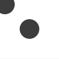

translate
translate(x, y)
Specifies the amount to move a subsequent shape, path, text, image on the screen. The first parameter sets the horizontal offset, the second parameter the vertical offset. Translating is the same as dragging something across the screen. Or the same as moving the canvas registration point, which is situated in the upper left corner by default. Once called, all commands following translate() are repositioned, which makes translate() useful for positioning whole compositions of multiple elements.
 |
oval(-10,-10,40,40)
translate(50,50)
oval(-10,-10,40,40) |